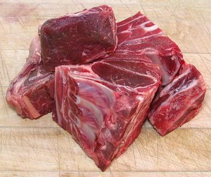

Mutton Chunks

Here in Southern California, Mutton is often cut into chunks, similar
to how Goat is often cut, but into larger chunks. Most of the Mutton
available here is imported frozen from Australia or New Zealand. The
photo specimens were about 50% bone, but quite low in fat.
More on Lamb / Mutton Cuts.
Buying:
Mutton is not common here in Southern
California, but can be found in some of the ethnic markets,
particularly those serving a Philippine community. The photo
specimens were found in a large multi-ethnic market in Los Angeles
for 2016 US $2.99 / pound.
Cooking:
These chunks can be roasted whole and used
to make soup stock. I usually cut away the meat for other uses (a little
tedious) and roast the bones for about 30 minutes in a preheated
475°F/245°C oven. I then simmer the bones for stock. Note: all
the fat goes in the stock pot because some of the desirable flavors from
the fat are water soluble. When the stock is done, the fat is removed
using your gravy separator.
Yield:
These chunks usually average out around 50%
removable meat and 50% bones, membranes and fat.
as_mchunkz* 160117 - www.clovegarden.com
©Andrew Grygus - agryg@clovegarden.com - Photos
on this page not otherwise credited © cg1
- Linking to and non-commercial use of this page permitted